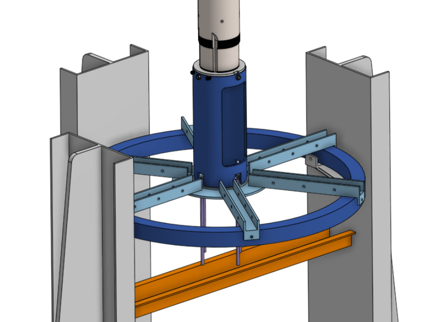
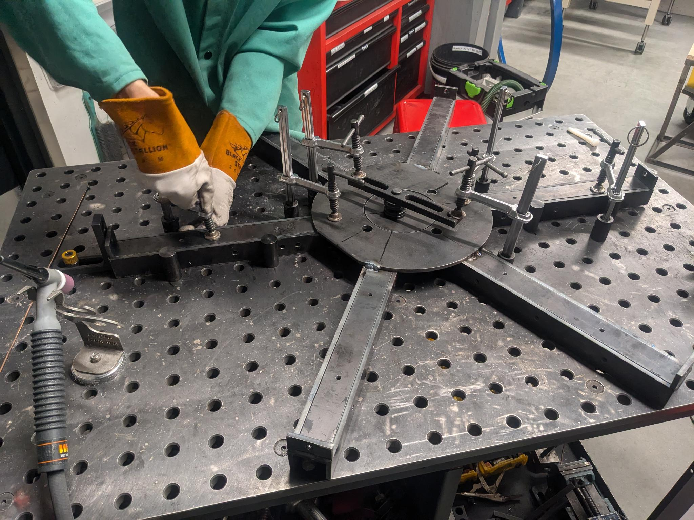
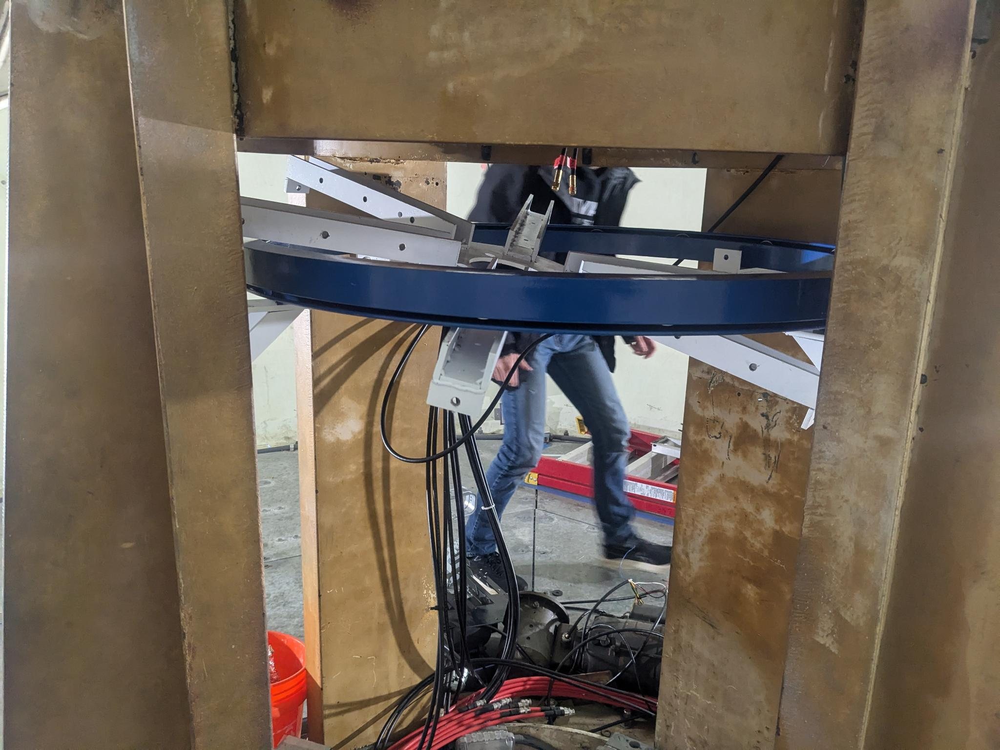
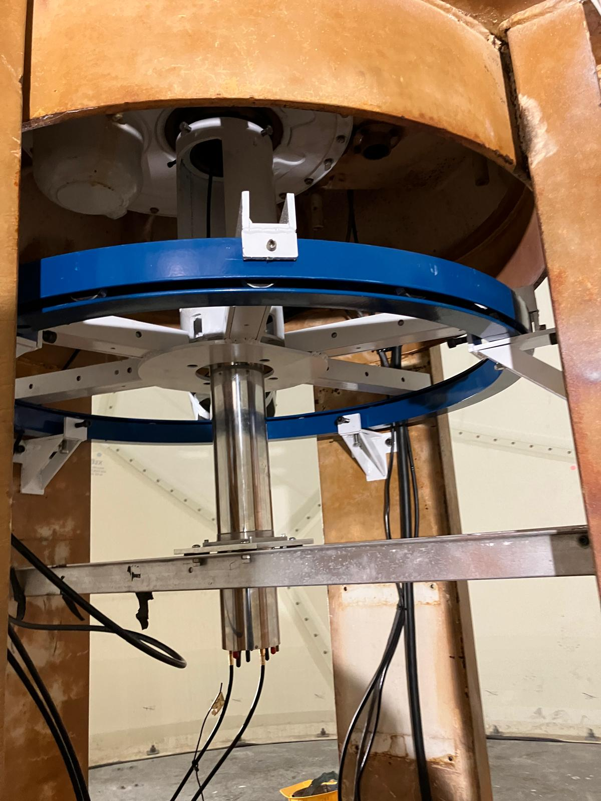

Because the RF slip ring used in the W1XM "Big Dish" antenna cannot handle legal limit RF power, the power amplifiers for the XM radar need to rotate with the dish. To support them, Oliver Trevor, Anika Huang, and I constructed a heavy duty rotating carousel that sits underneath the structure for the dish within the radome out of scrap steel. Our design consists of a rotating "spider" that sits atop a 2000lb carousel bearing we purchased online. The spider is coupled to the bottom of the radome azimuth shaft using a custom locking nut and a section of 6" steel pipe with slots milled in it to provide access to the RF slip ring.
We were able to plasma cut all of the pieces for the spider and the brackets that support it out of some 1/4" mild steel found in the garbage. The shaft and locking nut were made from mild steel purchased online - the thread on the azimuth shaft turned out to be M124 - 12TPI (!), likely because the lathe on which it was manufactured did not have the changegears required to do metric threading. To make sure that everything lined up, we welded the spider in two stages, starting with the arms and stopping to drill and tap the mounting holes in each channel before welding them together. This meant that our fixturing had to be very precise for the second stage since the holes were already machined - we used a nifty rotating welding jig to get the spacing of the arms just right.
After welding and painting, we hoisted it into the radome and quickly discovered that installing the brackets first had created a chicken/egg problem because the spider (which is wider than the bearing) had to be lifted through the center of the bearing to get it into place. This was extremely awkward but fortunately just possible.
 (photos from Oliver Trevor)